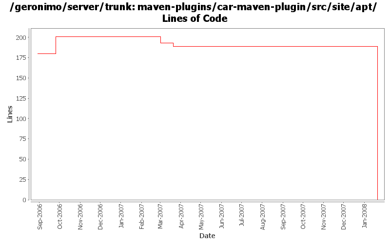

[root]/maven-plugins/car-maven-plugin/src/site/apt

| Author | Changes | Lines of Code | Lines per Change |
|---|---|---|---|
| Totals | 8 (100.0%) | 204 (100.0%) | 25.5 |
| jdillon | 7 (87.5%) | 202 (99.0%) | 28.8 |
| djencks | 1 (12.5%) | 2 (1.0%) | 2.0 |
(GERONIMO-3771) Moved maven-plugins/* to buildsupport/*, updated groupId to org.apache.geronimo.buildsupport
0 lines of code changed in 1 file:
GERONIMO-3330 rename plugin schema so it doesn't conflict with what's in 2.0.1
2 lines of code changed in 1 file:
r6720@Bliss: jason | 2007-03-20 01:48:14 -0700
(GERONIMO-2995) Replace backport-util-concurrent usage with java.util.concurrent
0 lines of code changed in 1 file:
r6690@Bliss: jason | 2007-03-19 15:01:06 -0700
(GERONIMO-2980) Rename ge-activemq-rar to geronimo-activemq-ra
1 lines of code changed in 1 file:
Remove mx4j more mx4j
0 lines of code changed in 1 file:
Adding APT friendly ASL sub-header, testing props for keyword expansion
201 lines of code changed in 1 file:
Trim the example some... does not need to be exact
0 lines of code changed in 2 files: